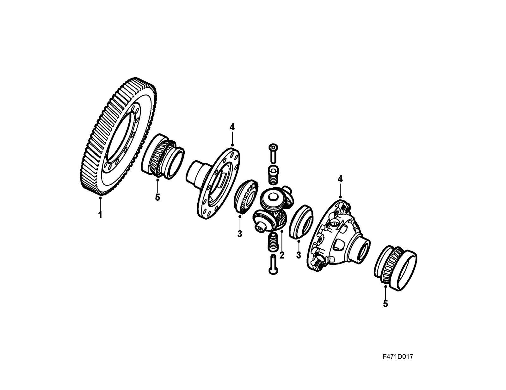

Differential
Differential4-gear differential
The differential allows the outer wheel to rotate faster than the inner wheel during cornering. The four, small differential pinions rotate around the differential shaft while the large differential pinions rotate at different speeds and are stationary when the car travels straight ahead. Power is transferred from the final drive pinions to the final drive gear (crown wheel) that is mounted inside the differential housing. From the differential housing, the power is transferred by the four small differential pinions to the large ones, which are attached to the inner driver and intermediate shaft with splines. From here, the power is passed through the drive shafts to the wheels.

1. Crown wheel
2. Differential pinion, 4 small
3. Differential pinion, 2 large
4. Differential housing
5. Bearing